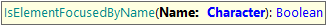
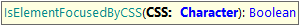
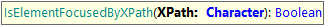
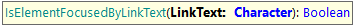

GXtest UI Commands - Control Focus
This command is useful to check if a control is focused on the page.
These commands return true if the control has the focus and false if not.
IsControlFocused
Checks whether a control is focused.
Parameters:
- ControlName: the name of the control as defined in the KB.
Example of use:
&driver.IsControlFocused("Name")
IsControlFocused
Checks whether a control is focused.
Parameters:
- ControlName: the name of the control as defined in the KB.
- Row: the row number to locate the control inside a grid
Example of use:
&driver.IsControlFocused("Name", 3)
&driver.IsControlFocused("FilterComp.Search", 1)
Also, they can be executed using different HTML locators (id, name, CSS, XPath or LinkText) as follows:
IsElementFocusedByID

Checks whether an element is focused using its ID.
Parameters:
- ID: the HTML element ID .
Example of use:
&driver.IsElementFocusedByID("InvoiceTotal")
IsElementFocusedByName

Checks whether an element is focused using its 'name' attribute.
Parameters:
- Name: the value of the NAME attribute of the element.
Example of use:
&driver.IsElementFocusedByName("total")
IsElementFocusedByCSS

Checks whether an element is focused using its CSS selector.
Parameters:
- CSS: the CSS selector to the element.
Example of use:
&driver.IsElementFocusedByCSS("#vVAR1")
IsElementFocusedByXPath

Checks whether an element is focused using an XPath selector.
Parameters:
- XPath: the XPath selector to the element.
Example of use:
&driver.IsElementFocusedByXPath("//textarea[@id='vVAR1']")
IsElementFocusedByLinkText

Checks whether an element is focused using a LinkText selector.
Parameters:
- LinkText: the link’s text of the element.
Example of use:
&driver.IsElementFocusedByLinkText("Edit")
| Backlinks |
| GXtest UI Test for Web - Supported Commands |
| Toc:GXtest v4 |